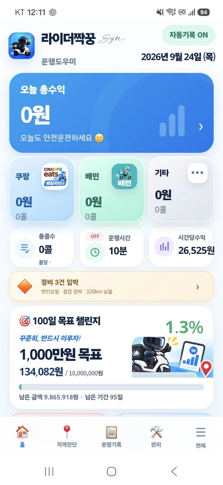
홈
오늘 운행을 한눈에
수익, 플랫폼별 기록, 운행시간, 시간당수익과 목표 진행률을 확인합니다.
라이더짝꿍은 자동기록, 수익·정산, 지역판단, 정비·지출, 안전과 백업까지 라이더의 반복적인 관리 업무를 한 앱에 모았습니다.
기록·수익·지역·정비·안전·백업을 각각 따로 관리하지 않아도 됩니다.
배달완료 건수와 수익을 기록하고 최근 기록, 오류 수정, 삭제·복원까지 한곳에서 관리합니다.
총수익, 시간당수익, 공제·지출·렌트 부담과 정산예정·입금확인·검산을 함께 관리합니다.
활동지역과 선호·주의·회피지역을 직접 설정하고 배달 목적지 정보를 운행 중 확인합니다.
단속경고, 주변 안전정보, 112·119, 사고메모와 사고사진 촬영·보관 기능을 제공합니다.
엔진오일·타이어·브레이크 등 정비주기와 주유, 업무지출, 렌트·리스 부담을 기록합니다.
정산·주유·정비·렌트·보험·사고 증빙을 보관하고 전체 데이터를 백업·복원할 수 있습니다.
실제 라이더짝꿍 화면입니다. 공개 APK와 현재 개발 화면은 버전에 따라 일부 차이가 있을 수 있습니다.

수익, 플랫폼별 기록, 운행시간, 시간당수익과 목표 진행률을 확인합니다.
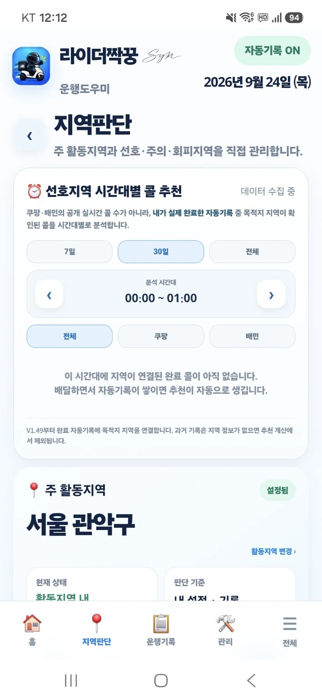
활동지역과 선호·주의·회피 기준으로 목적지 판단을 돕습니다.
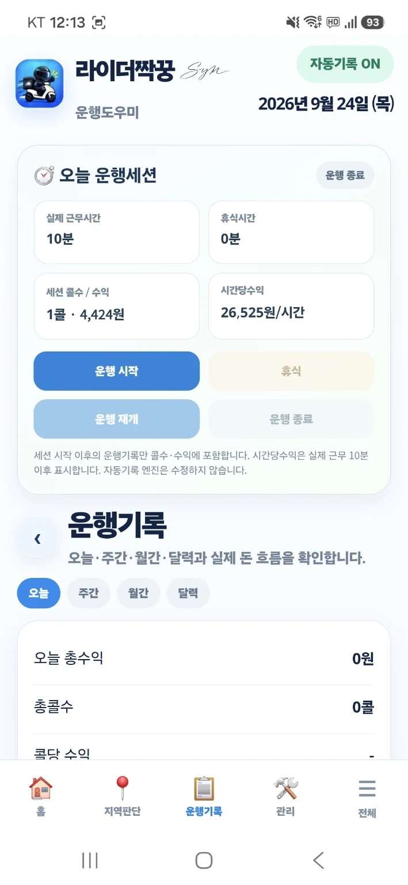
운행세션, 수익·건수·시간과 자동기록 내역을 관리합니다.
수익과 정산만 보는 것이 아니라 바이크 유지비와 렌트 부담까지 함께 관리합니다.
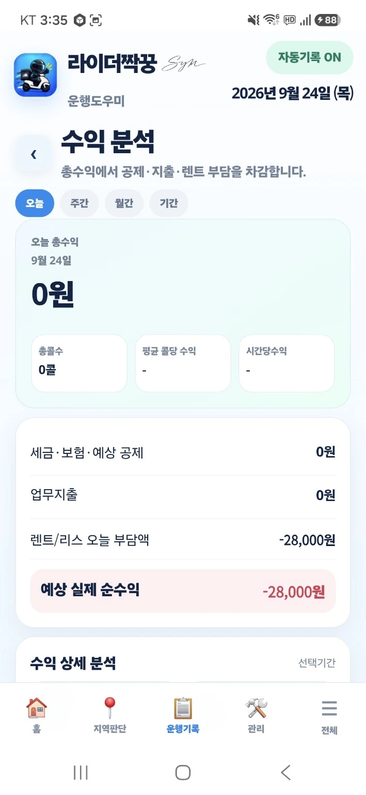
총수익에서 공제·업무지출·렌트 부담을 반영해 실제 돈의 흐름을 확인합니다.
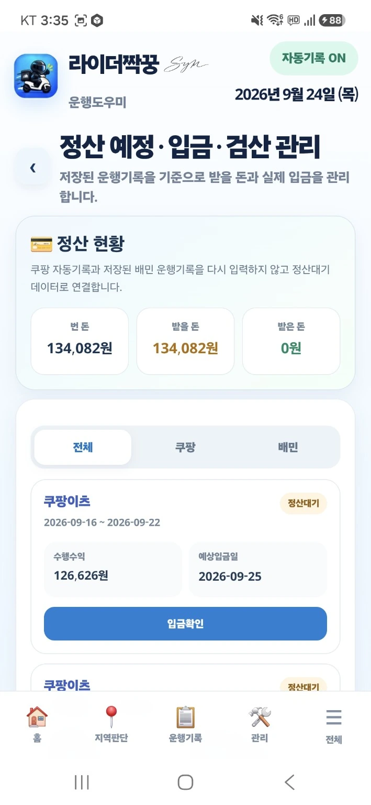
플랫폼별 정산예정, 입금확인과 실제 입금 검산을 한 흐름으로 관리합니다.
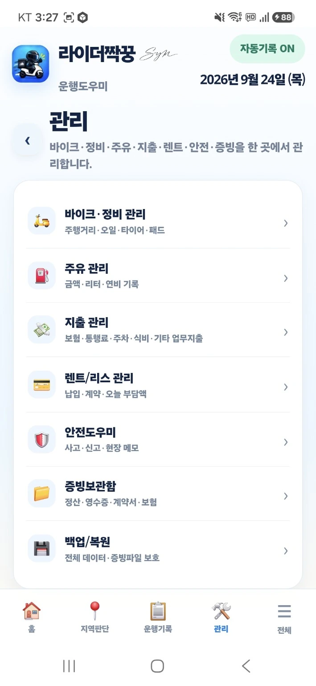
라이더가 따로 기록하던 비용과 관리 항목을 한 메뉴에서 확인합니다.
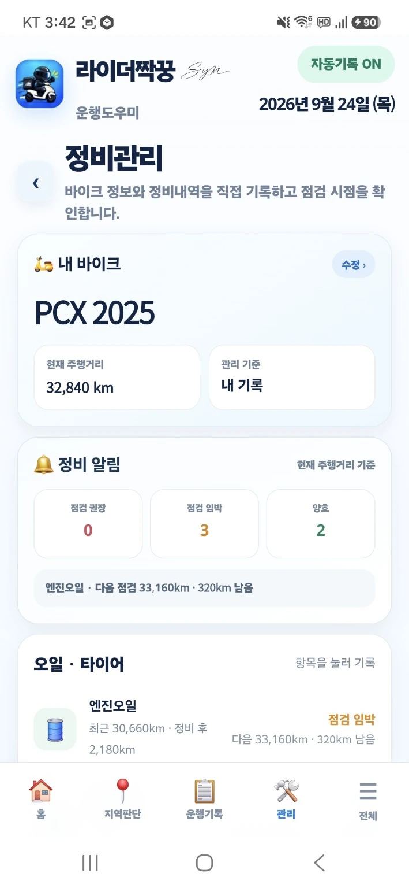
엔진오일·타이어·브레이크 등 주요 소모품의 최근 정비와 다음 점검 시점을 확인합니다.
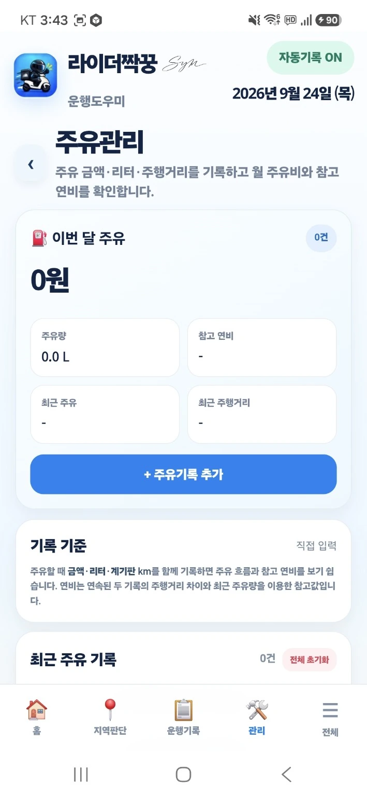
주유 금액·리터·계기판 주행거리를 기록해 월 주유비와 운행 흐름을 확인합니다.
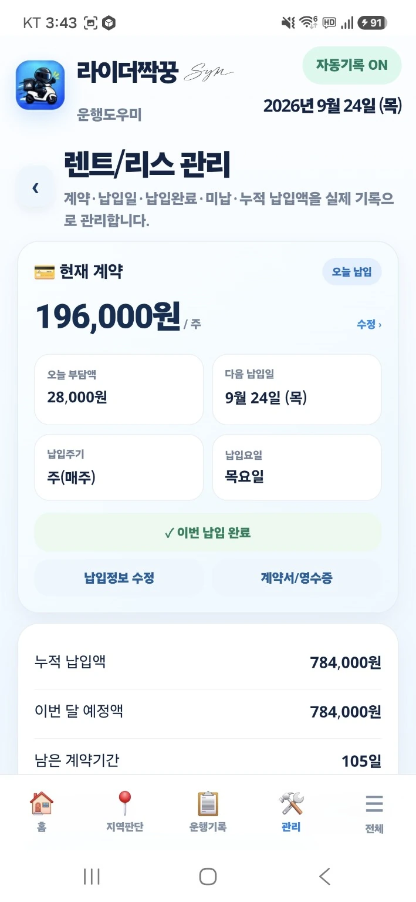
납입주기, 오늘 부담액, 누적 납입액과 남은 계약기간을 실제 기록으로 관리합니다.
운행 안전정보부터 사고 증빙, 백업과 위험도로 메모까지 실제 라이더 상황에 맞춘 기능입니다.
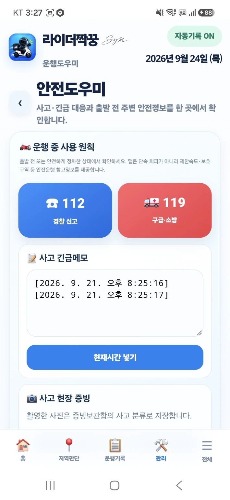
경찰·구급 연락, 사고 긴급메모와 현장 증빙 촬영을 한 화면에서 접근합니다.
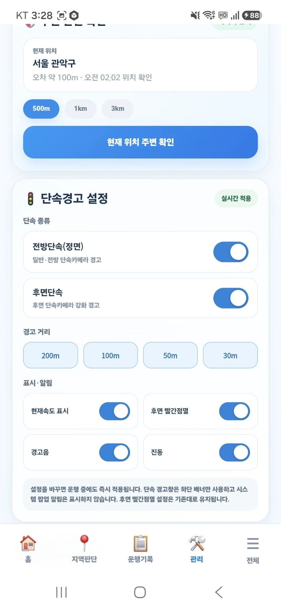
경고 거리, 현재속도 표시, 후면 빨간점멸, 경고음과 진동을 설정합니다.
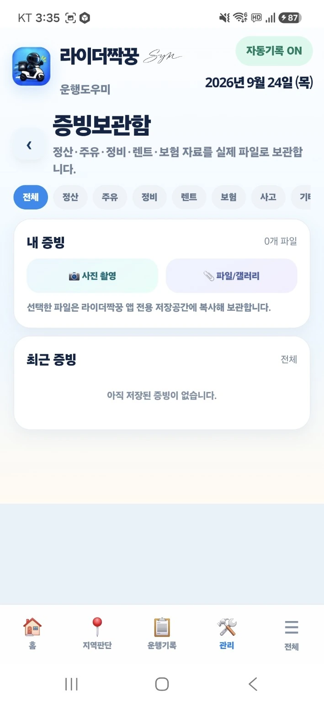
정산·주유·정비·렌트·보험·사고 자료를 사진이나 파일로 분류해 보관합니다.
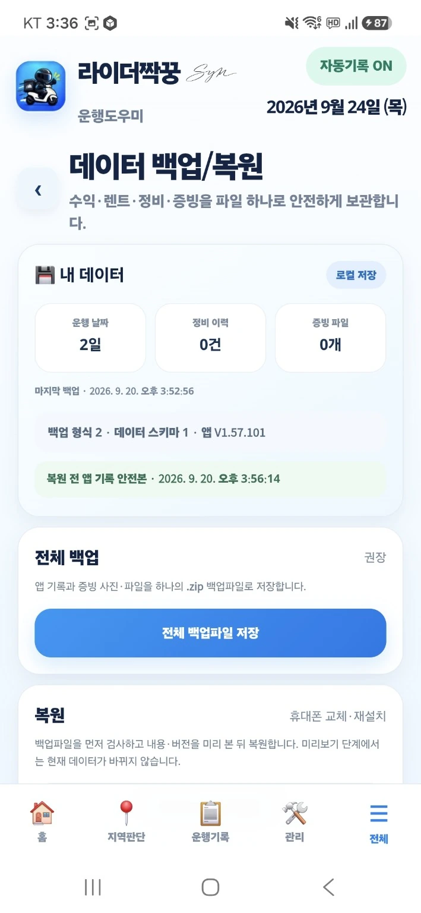
수익·렌트·정비·증빙 데이터를 하나의 백업파일로 저장하고 복원합니다.
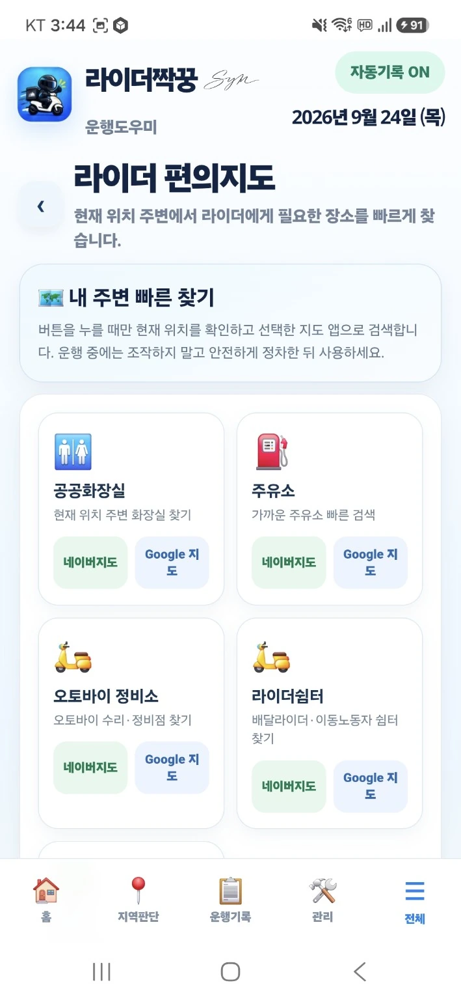
현재 위치 주변에서 라이더에게 필요한 장소를 지도 앱으로 빠르게 찾습니다.
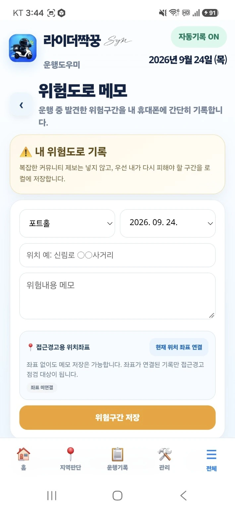
포트홀·침수·공사·미끄럼 구간을 위치와 메모로 남겨 다음 운행에 활용합니다.
V1.57.101 TEST
짝꿍내비, 배민 자동기록, 단속경고 등 일부 기능은 현재 테스트 중입니다. 정상 동작하지 않거나 사용이 제한될 수 있으니 확인 후 다운로드해 주세요.
일부 기능은 실제 운행 테스트 중이며, 공개 APK에 포함된 기능과 현재 개발 중인 기능은 버전에 따라 다를 수 있습니다.